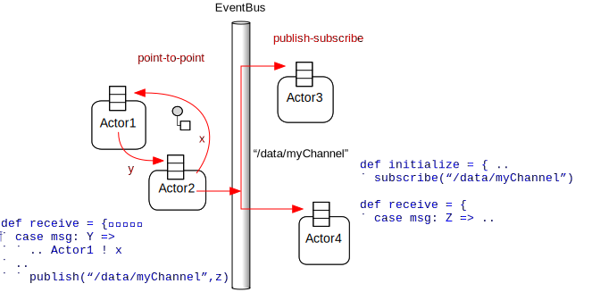

Actors
The actor programming model composes concurrent systems of objects (actors) that only communicate through asynchronous messages. The Actor Model was first published in 1973 [Hewitt73] and since then has been subject to numerous publications and implementations. Today, actors are used in large production systems such as phone switches (Erlang), cluster computing (Spark) and general web application servers.
Actor Components and Properties

RACE uses the open source Akka framework as the implementation basis for its actors. Akka actors have a ActorRef
that is used to send messages to this actor, and a mailbox that receives those messages. Processing of received
messages is guaranteed to be sequential, i.e. the Akka scheduler makes sure that for each actor there is only a single
thread at a time that processes messages. ActorRefs are not object references, i.e. they cannot be used to
access fields or methods of respective actor objects.
With this, actors have two properties that are crucial to avoid potential concurrency defects:
- actors do not share internal state, their fields are not visible to the outside
- each actor processes its messages sequentially, i.e. it never executes in more than one thread at a time
Those properties essentially turn actors into sequential programming constructs, under the caveat that there is no system guarantee about the global order in which messages are received. Ordering is only deterministic for each sender/receiver pair. If global message order is critical, it has to be enforced by the application.
While ActorRefs and message passing reduce the chance of erroneous shared memory access, they do not eliminate the
possibility of data races. Akka still allows the use of object references in actor constructor calls and message
composition. This is mitigated by Scala's emphasis on immutable data types, which in general makes it a better choice as
actor programming language than Java (see Why Scala for details).
Akka actors have remarkably little overhead. A basic actor definition can be as simple as:
import akka.actor.Actor
class ProbeActor extends Actor {
def receive = {
case msg => sender ! "got it"
}
}The main feature is a Partial Function receive which defines the message processing of this actor and can make
full use of Scala's Pattern Matching. Most notably, there is no code required for synchronization or scheduling.
Please consult the Akka Actors documentation for more details.
Actor Communication

There are two basic modes of communication between actors:
point-to-point - a message is explicitly sent to the receiving actor
publish-subscribe - the receiving actor registers its interest about a certain topic on an
*EventBus, and the sender publishes messages to that bus without knowing about its subscribers
Akka supports both communication modes. For point-to-point communication, this includes full location transparency, i.e. messages can be sent to actors running in different processes or machines. For pub-sub, there needs to be additional infrastructure to achieve seamless remoting, which is provided by RACE on top of Akka.
With respect to delivery, out-of-the-box Akka only provides at-most-once delivery, i.e. the weakest but also most efficient form (the other ones being at-least-once and exactly-once). The rationale is that in most cases reliability is a end-to-end property, i.e. it has to include sender/receiver actor behavior. In that respect, Akka maintains a strict actor hierarchy that guarantees failure notification. For details, please refer to the Akka documentation about Message Delivery Reliability
| [Hewitt73] | : Carl Hewitt; Peter Bishop; Richard Steiger (1973). "A Universal Modular Actor Formalism for Artificial Intelligence". IJCAI. |